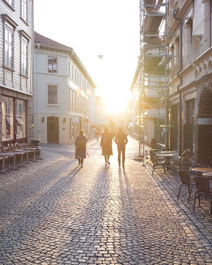
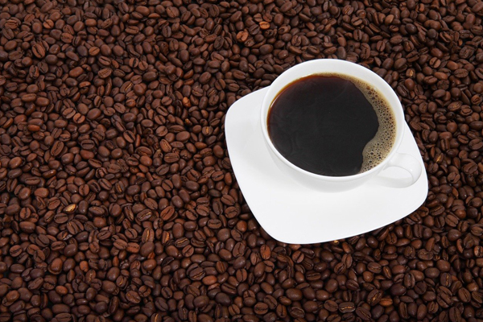

카페 트리핀
여행 속 설레의 공간 - tripin
-
- relax
- 휴식, 그리고 여정의 시작과 마무리를 함께하는 감성 공간
-
- experience
- 여행, 체험, 교류의 여행 커뮤니티 경험 제공
-

- memory
- 감성을 자아내는 공간과 색다른 경험 제공
-
트리핀
여행을 나타내는 trip과 공간을 나타내는 in을 조합하여 '여행 속 설렘의 공간'을 의미합니다. 철길과 기차, 그리고 위치(pin)을 조합한 심벌마크는 다채로운 컬러를 조합하여 고객의 흥미를 자극하며, 뻗어가는 철도는 전국으로 향하는 트리핀의 미래지향적 가치를 담고 있습니다.
-

프리미엄 원두
카페 트리핀의 원두는 맛과 향이 우수한 4종 이상의 아라비카 100% 원두를 브랜딩하였습니다. 다크 초콜릿의 묵직한 바디감과 고소한 견과류의 풍미, 건과일이 살짝 터치된 복합적인 맛을 느낄 수 있습니다. 또한 레인포레스트 인증을 받은 친환경 유기농 원두를 블랜딩하여 사용합니다
-
트립허브
카페 트리핀은 차별적인 복합 공간을 추구하고 있습니다. 여행과 지역 정보를 공유하는 커뮤니티 공간 트립허브(trip hub)는 고객에게 유용하고 색다른 경험을 제공합니다. 좋은 추억 만들 수 있는 카페 트리핀이 되도록 노력하겠습니다.